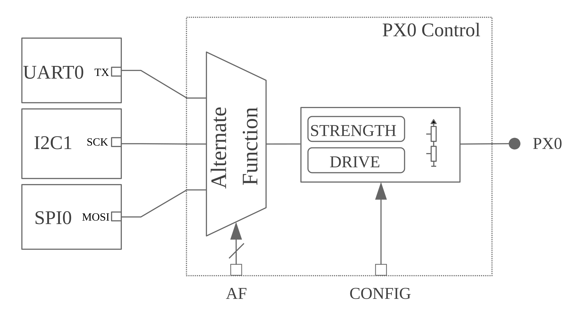

引脚控制
本文是引脚控制的概要指南。API 参考资料见 引脚控制 API。
简介
负责控制引脚复用以及引脚方向、上拉/下拉电阻等引脚配置参数的硬件模块称为 引脚控制器。引脚控制器的主要使用者是 SoC 的硬件外设，因为控制器可以将外设信号引出，例如将 I2C0 的 SDA 信号映射到引脚 PX0。不仅如此，它通常还允许配置外设正常工作所需的某些引脚设置，例如根据工作频率设置压摆率。可用的配置选项取决于厂商/SoC，从简单的上拉/下拉选项到去抖、低功耗模式等更高级的设置不等。
引脚控制在硬件中的实现方式因厂商/SoC 而异。常见的是 集中式 方案，即所有引脚配置参数（包括信号映射）都由单个硬件模块（通常称为 pinmux）控制。下图展示了这种方案。根据 AF 控制位，PX0 可以映射到 UART0_TX、I2C0_SCK 或 SPI0_MOSI。上拉/下拉等其他配置参数则通过 CONFIG 位在同一模块中控制。许多 SoC 系列都使用这种模型，例如 NXP 和 STM32 的许多产品。

其他厂商/SoC 采用 分布式 方案。在这种情况下，引脚映射和配置由多个硬件模块控制。下图展示了一种由外设控制引脚映射的分布式方案，Nordic nRF SoC 就是如此。

从用户角度看，无论硬件如何实现，引脚控制器的用法都没有区别：用户总是应用一个状态。唯一的区别在于驱动实现。一般来说，为采用分布式方案的硬件实现引脚控制器驱动需要更多工作，因为驱动需要掌握与外设相关的寄存器。
引脚控制与 GPIO
引脚控制器驱动涵盖的部分功能与 GPIO 驱动重叠。例如，上拉/下拉电阻通常既可以由引脚控制驱动启用，也可以由 GPIO 驱动启用。在 Zephyr 中，引脚控制驱动的用途是执行外设信号复用，并配置该外设正常工作所需的其他引脚参数。因此，引脚控制驱动的主要使用者是 SoC 外设。相比之下，GPIO 驱动用于对引脚进行通用控制，即手动读取或控制引脚的逻辑电平。
状态模型
设备驱动要正常工作，需要应用特定的引脚配置。有些设备驱动需要静态配置，通常在初始化时设置。另一些则需要根据运行条件在运行时更改配置，例如在挂起设备时启用低功耗模式。这类需求使用 状态 来建模，这一概念借鉴自 Linux 内核。每个设备驱动拥有一组状态。每个状态都有唯一的名称，并包含一套完整的引脚配置（见下图）。这实际上意味着各状态彼此独立，因此无需按特定顺序应用。状态模型的另一个优点是将设备驱动与引脚配置隔离开来。
|
|||
|---|---|---|---|
|
|
||
TX |
|
TX |
|
RX |
|
RX |
|
标准状态
引脚控制状态的名称和数量取决于设备驱动的需求。很多情况下，在初始化时应用单个状态就足够了，但在另一些情况下则需要更多状态。为了保持一致，针对最常见的用例制定了命名约定。下图详细列出了标准化的状态及其用途。
状态 |
标识符 |
用途 |
|
|
设备处于工作状态时的引脚状态 |
|
|
设备处于低功耗或睡眠模式时的引脚状态 |
注意，将来可能会引入其他标准状态。
自定义状态
某些设备驱动可能需要使用标准状态之外的自定义状态。为此，设备驱动需要在其作用域中定义自定义状态标识符，命名为 PINCTRL_STATE_{STATE_NAME}，其中 {STATE_NAME} 是大写的状态名称。例如，如果要支持 mystate，驱动的作用域中就需要有名为 PINCTRL_STATE_MYSTATE 的定义。
备注
自定义状态标识符必须从 PINCTRL_STATE_PRIV_START 开始，这一点很重要
如果需要在驱动之外访问自定义状态（例如执行动态引脚控制），应将自定义标识符放在可公开访问的头文件中。
跳过状态
在大多数情况下，设备树中定义的状态就是编译后固件中使用的状态。但在某些情况下，某些状态会根据编译标志有条件地使用。典型的例子是 sleep 状态。实际上只有启用了 CONFIG_PM 或 CONFIG_PM_DEVICE 时才会使用该状态。如果需要一个不带这些电源管理配置的固件变体，理论上应从设备树中删除 sleep 状态，以免浪费 ROM 空间来存储这种未使用的状态。
如果在定义引脚控制配置时存在一个名为 PINCTRL_SKIP_{STATE_NAME} 且展开为 1 的定义，pinctrl 设备树宏就会跳过相应的状态。对于 sleep 状态，pinctrl API 已经根据设备电源管理是否可用提供了这样的定义：
#if !defined(CONFIG_PM) && !defined(CONFIG_PM_DEVICE)
/** Out of power management configurations, ignore "sleep" state. */
#define PINCTRL_SKIP_SLEEP 1
#endif
动态引脚控制
动态引脚控制是指在运行时更改引脚配置的能力。当同一固件需要运行在略有差异的多块开发板上，而每块开发板将某个外设路由到不同的引脚组时，此特性会很有用。可以通过设置 CONFIG_PINCTRL_DYNAMIC 启用此特性。
备注
动态引脚控制只应用于尚未初始化的设备。在设备运行时更改引脚配置可能导致意外行为。由于 Zephyr 尚不支持设备反初始化，此功能只应在启动早期阶段使用。
启用动态引脚控制的影响之一是 pinctrl_dev_config 将存储在 RAM 而不是 ROM 中（但状态和引脚配置本身不会）。然后，用户可以使用 pinctrl_update_states() 将 pinctrl_dev_config 中存储的状态更新为一组新状态。这实际上意味着设备驱动应用某个状态时，会应用更新后状态中存储的引脚配置。
设备树表示
由于设备树本身就是用来描述硬件的，因此它自然是存储引脚控制配置的首选。以下各节概述了状态和引脚配置在设备树中的表示方式。
状态
对于给定设备，其每个引脚控制状态在设备树中都由 pinctrl-N 属性表示，其中 N 是从零开始的状态索引。然后使用 pinctrl-names 属性按索引为每个状态属性指定唯一标识符，例如 pinctrl-names 列表中的第 0 项就是 pinctrl-0 的名称。
periph0: periph@0 {
...
/* state 0 ("default") */
pinctrl-0 = <...>;
...
/* state N ("mystate") */
pinctrl-N = <...>;
/* names for state 0 up to state N */
pinctrl-names = "default", ..., "mystate";
...
};
引脚配置
在设备树中表示引脚配置有多种方式。但它们最终编码的都是相同的信息：引脚复用和引脚配置参数。例如，UART_RX 映射到 PX0 并启用上拉。具体采用哪种表示在很大程度上取决于各厂商/SoC，因此引脚控制驱动的设备树绑定文件是查找详细信息的最佳位置。
下例展示了一种流行且灵活的方式。这种方式的优点之一是能够根据共享的引脚配置进行分组，从而减少引脚控制定义的冗长程度。另一个优点是特定状态的引脚配置参数都包含在单个设备树节点中。
/* board.dts */
#include "board-pinctrl.dtsi"
&periph0 {
pinctrl-0 = <&periph0_default>;
pinctrl-names = "default";
};
/* vnd-soc-pkgxx.h
* File with valid mappings for a specific package (may be autogenerated).
* This file is optional, but recommended.
*/
...
#define PERIPH0_SIGA_PX0 VNDSOC_PIN(X, 0, MUX0)
#define PERIPH0_SIGB_PY7 VNDSOC_PIN(Y, 7, MUX4)
#define PERIPH0_SIGC_PZ1 VNDSOC_PIN(Z, 1, MUX2)
...
/* board-pinctrl.dtsi */
#include <vnd-soc-pkgxx.h>
&pinctrl {
/* Node with pin configuration for default state */
periph0_default: periph0_default {
group1 {
/* Mappings: PERIPH0_SIGA -> PX0, PERIPH0_SIGC -> PZ1 */
pinmux = <PERIPH0_SIGA_PX0>, <PERIPH0_SIGC_PZ1>;
/* Pins PX0 and PZ1 have pull-up enabled */
bias-pull-up;
};
...
groupN {
/* Mappings: PERIPH0_SIGB -> PY7 */
pinmux = <PERIPH0_SIGB_PY7>;
};
};
};
另一种流行的模型是为每个引脚配置和状态各设一个节点。虽然这种模型可能使开发板的引脚控制文件更短，但它也要求为每个引脚映射和状态各设一个节点，因为一般来说节点不能在多个状态之间复用。如果无法采用自动生成，不建议使用这种方法。
备注
由于所有设备树信息都会被解析为 C 头文件，因此务必尽量减小其大小。为此，必须给预生成的节点加上 /omit-if-no-ref/ 前缀。该前缀可确保节点在未被使用时被丢弃。
/* board.dts */
#include "board-pinctrl.dtsi"
&periph0 {
pinctrl-0 = <&periph0_siga_px0_default &periph0_sigb_py7_default
&periph0_sigc_pz1_default>;
pinctrl-names = "default";
};
/* vnd-soc-pkgxx.dtsi
* File with valid nodes for a specific package (may be autogenerated).
* This file is optional, but recommended.
*/
&pinctrl {
/* Mapping for PERIPH0_SIGA -> PX0, to be used for default state */
/omit-if-no-ref/ periph0_siga_px0_default: periph0_siga_px0_default {
pinmux = <VNDSOC_PIN(X, 0, MUX0)>;
};
/* Mapping for PERIPH0_SIGB -> PY7, to be used for default state */
/omit-if-no-ref/ periph0_sigb_py7_default: periph0_sigb_py7_default {
pinmux = <VNDSOC_PIN(Y, 7, MUX4)>;
};
/* Mapping for PERIPH0_SIGC -> PZ1, to be used for default state */
/omit-if-no-ref/ periph0_sigc_pz1_default: periph0_sigc_pz1_default {
pinmux = <VNDSOC_PIN(Z, 1, MUX2)>;
};
};
/* board-pinctrl.dts */
#include <vnd-soc-pkgxx.dtsi>
/* Enable pull-up for PX0 (default state) */
&periph0_siga_px0_default {
bias-pull-up;
};
/* Enable pull-up for PZ1 (default state) */
&periph0_sigc_pz1_default {
bias-pull-up;
};
备注
不建议在预定义节点中添加引脚配置默认值。一般来说，引脚配置取决于开发板设计或外设的工作条件，因此应由开发板来决定。例如，默认启用上拉并不总是可取的，因为开发板上可能已经有上拉，或者上拉的取值取决于总线的工作速率。默认值的另一个缺点是用户可能并不知道它们的存在，例如：
/* not evident that "periph0_siga_px0_default" also implies "bias-pull-up" */
/omit-if-no-ref/ periph0_siga_px0_default: periph0_siga_px0_default {
pinmux = <VNDSOC_PIN(X, 0, MUX0)>;
bias-pull-up;
};
实现指南
引脚控制驱动
引脚控制驱动只需实现一个函数：pinctrl_configure_pins()。该函数接收一个需要应用的引脚配置数组。此外，如果设置了 CONFIG_PINCTRL_STORE_REG，它还会接收与给定引脚关联的设备寄存器地址。某些驱动可能需要这一信息来执行设备特定的操作。
引脚配置存储在一个与厂商/SoC 相关的不透明类型中：pinctrl_soc_pin_t。该类型需要定义在位于 Zephyr 包含路径中、名为 pinctrl_soc.h 的头文件中。它可以是一个简单的整数值，也可以是包含多个字段的结构体。pinctrl_soc.h 还需要定义一个名为 Z_PINCTRL_STATE_PINS_INIT 的宏，它接受两个参数：节点标识符和属性名（pinctrl-N）。该宏需要根据这些信息，为给定节点的 pinctrl-N 属性中包含的所有引脚配置定义一个初始化器。
至于设备树中引脚配置的表示方式，厂商可以自行决定哪种方案更适合自己的设备。但应遵循以下准则：
使用
pinctrl-N（N=0, 1, ...）和pinctrl-names属性定义引脚控制状态。这些属性定义在dts/bindings/pinctrl/pinctrl-device.yaml中。使用
dts/bindings/pinctrl/pincfg-node.yaml中定义的标准引脚配置属性。
如果某种不遵循这些准则的表示方式已被同一厂商用于其他操作系统（例如 Linux），则也可能被接受。
设备驱动
本节提供一些建议，说明设备驱动应如何使用 pinctrl API 来成功配置其所需的引脚。
需要修改设备兼容属性对应的绑定，使其包含 pinctrl-device.yaml。例如：
include: [base.yaml, pinctrl-device.yaml]
需要此文件才能为设备添加 pinctrl-N 和 pinctrl-names 属性。
从设备驱动的角度看，要使用 pinctrl API 需要执行两个步骤。首先，需要定义引脚控制配置，包括所有状态和引脚。为此应使用 PINCTRL_DT_DEFINE 或 PINCTRL_DT_INST_DEFINE 宏。其次，需要保存对设备实例 pinctrl_dev_config 的引用，因为之后使用 API 时需要它。这可以通过 PINCTRL_DT_DEV_CONFIG_GET 和 PINCTRL_DT_INST_DEV_CONFIG_GET 宏来实现。
值得注意的是，设备与其关联的引脚控制配置之间唯一的联系是基于变量命名约定的。pinctrl_dev_config 实例按照对应的设备实例来命名，因此之后可以根据设备的设备树节点标识符获取对它的引用。这样可以尽量减少 ROM 占用，因为只有需要引脚控制的设备才会持有对引脚控制配置的引用。
驱动定义好引脚控制配置并保存了对它的引用后，就可以使用该 API 了。应用状态最常用的方式是使用 pinctrl_apply_state()。如果事先（例如在初始化时）缓存了状态，也可以使用更底层的函数 pinctrl_apply_state_direct() 跳过状态查找。由于状态查找预计很快，建议使用 pinctrl_apply_state()。
下面给出了一个使用 pinctrl API 的设备驱动的完整示例。
/* A driver for the "mydev" compatible device */
#define DT_DRV_COMPAT mydev
...
#include <zephyr/drivers/pinctrl.h>
...
struct mydev_config {
...
/* Reference to mydev pinctrl configuration */
const struct pinctrl_dev_config *pcfg;
...
};
...
static int mydev_init(const struct device *dev)
{
const struct mydev_config *config = dev->config;
int ret;
...
/* Select "default" state at initialization time */
ret = pinctrl_apply_state(config->pcfg, PINCTRL_STATE_DEFAULT);
if (ret < 0) {
return ret;
}
...
}
#define MYDEV_DEFINE(i) \
/* Define all pinctrl configuration for instance "i" */ \
PINCTRL_DT_INST_DEFINE(i); \
... \
static const struct mydev_config mydev_config_##i = { \
... \
/* Keep a ref. to the pinctrl configuration for instance "i" */ \
.pcfg = PINCTRL_DT_INST_DEV_CONFIG_GET(i), \
... \
}; \
... \
\
DEVICE_DT_INST_DEFINE(i, mydev_init, NULL, &mydev_data##i, \
&mydev_config##i, ...);
DT_INST_FOREACH_STATUS_OKAY(MYDEV_DEFINE)
引脚控制 API
- pinctrl_interface
动态引脚控制
- pinctrl_interface_dynamic